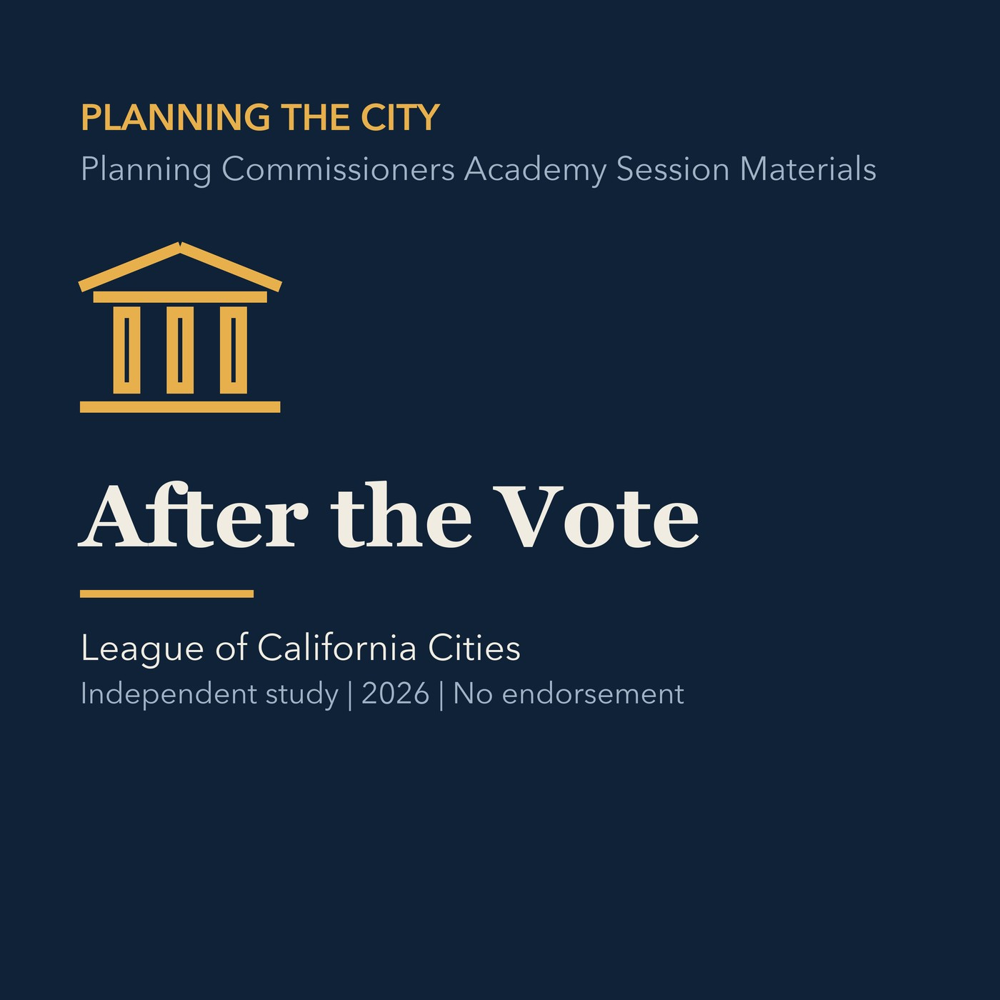

EPISODE 08
After the Vote
Covers resolutions, appeals, conditions, implementation, records, and accountability after a decision.

- Stable GUID
d1d36f8e-7246-5a3f-aa4c-f6963cb34719- Release
- planning-commission-prep-v2026.3
- SHA-256
4ae9cc9870479cc491d8fb4a70c92206d99ca59648c333d5bd55997a09de596c